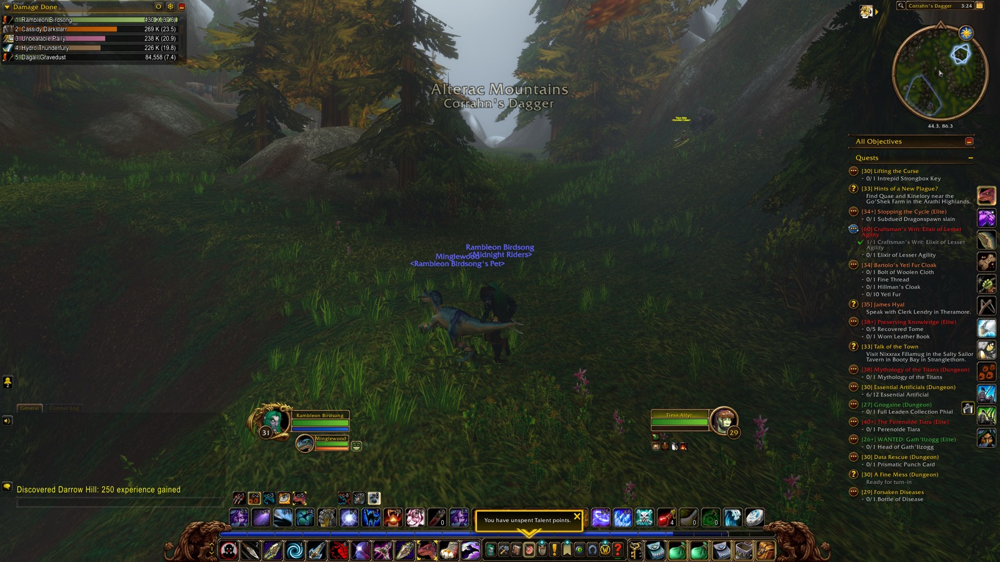
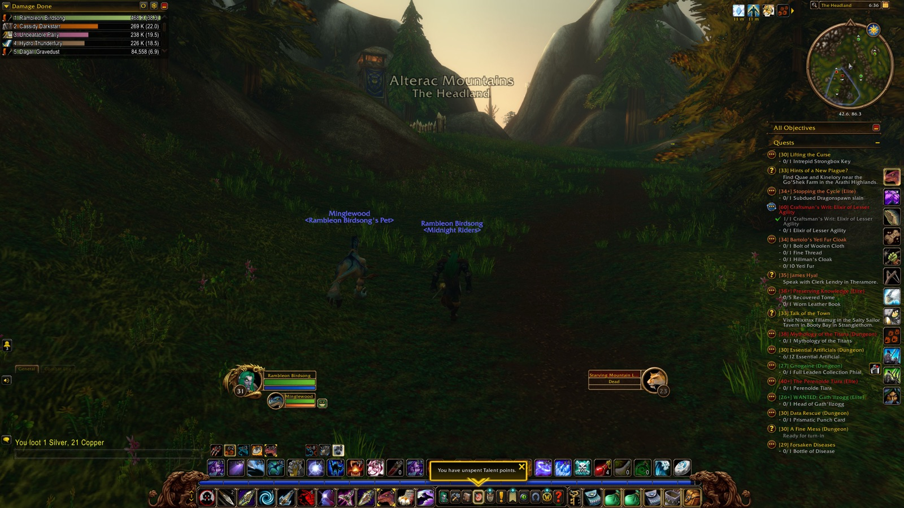
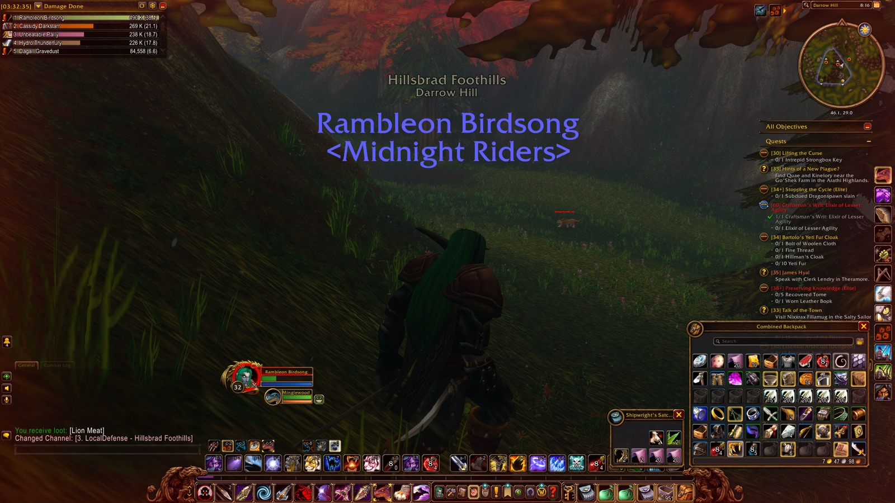
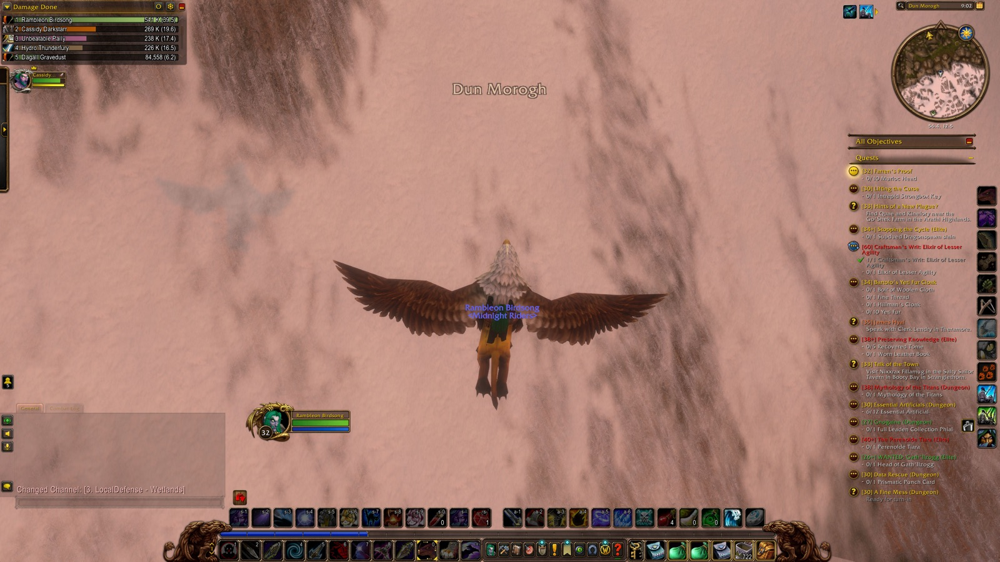
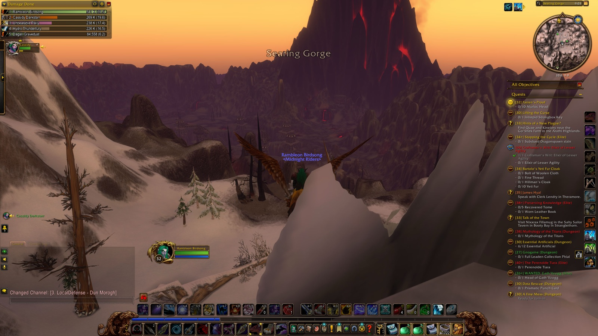
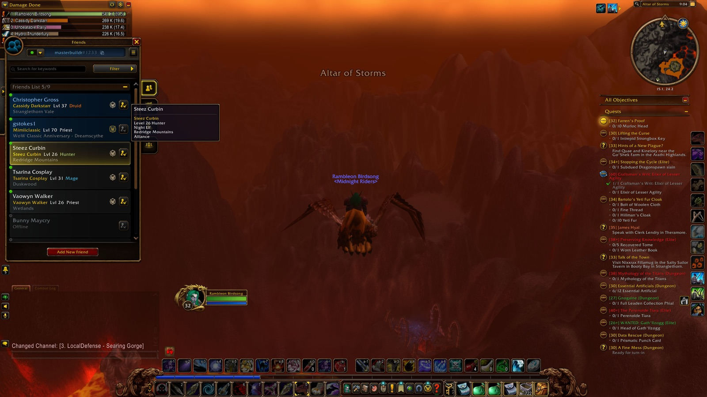
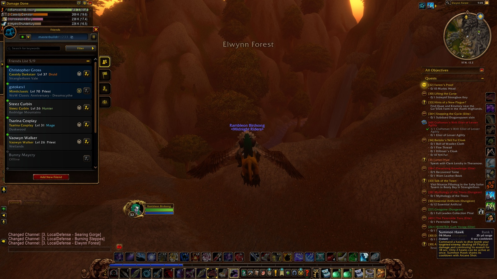
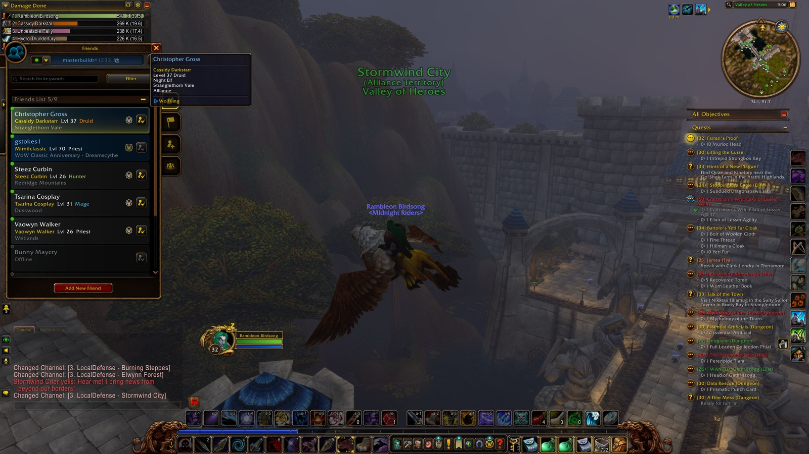
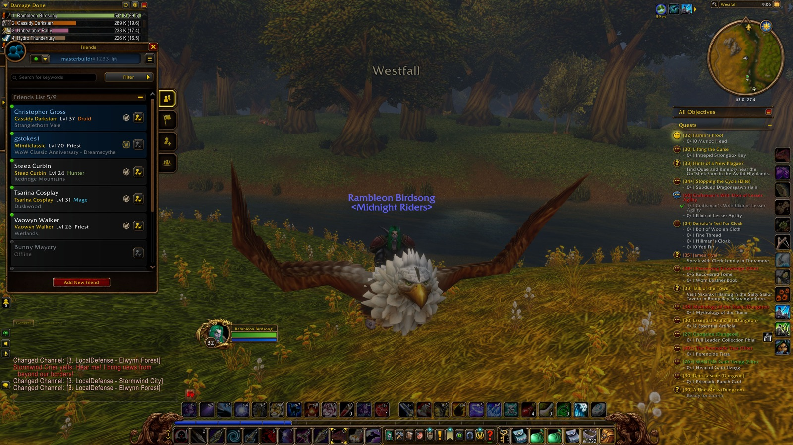
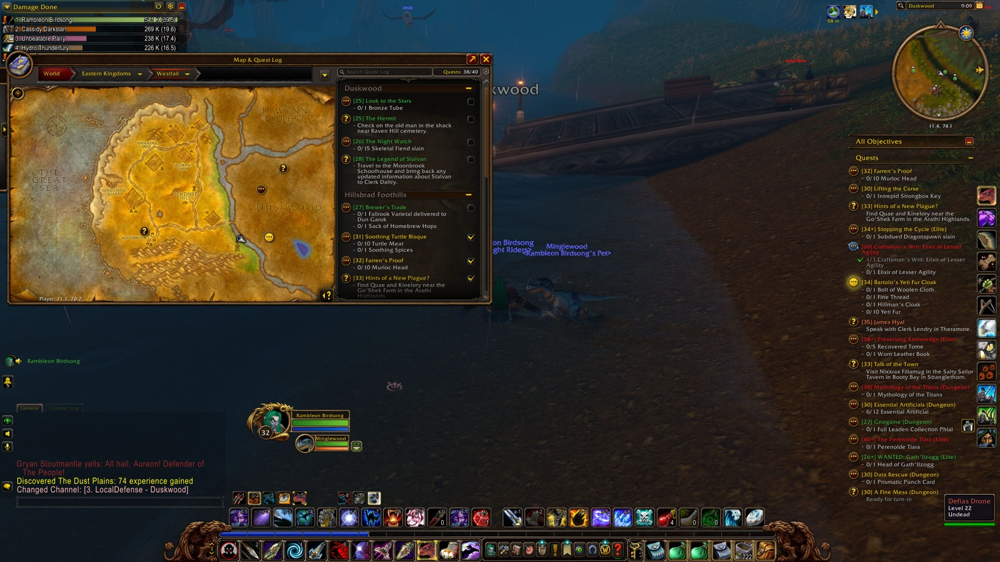

248 moments, in order · fold
- 3:20 PM — Began the adventure
- 3:20 PM — Entered Southshore (Hillsbrad Foothills)
- 3:21 PM — Entered Southshore Town Hall (Hillsbrad Foothills)
- 3:21 PM — Accepted "Syndicate Assassins"
- 3:21 PM — Accepted "An Alarming Request"
- 3:21 PM — Entered Southshore (Hillsbrad Foothills)
- 3:22 PM — Entered Hillsbrad Foothills
- 3:23 PM — Entered Darrow Hill (Hillsbrad Foothills)
- 3:23 PM — Discovered Darrow Hill
- 3:23 PM — Discovered Darrow Hill
- 3:24 PM — Entered Corrahn's Dagger (Alterac Mountains)

3:24 PM — Entered Alterac Mountains - 3:24 PM — Discovered Corrahn's Dagger
- 3:24 PM — Discovered Corrahn's Dagger
- 3:24 PM — Discovered The Headland
- 3:24 PM — Discovered The Headland
- 3:24 PM — Entered The Headland (Alterac Mountains)
- 3:24 PM — Entered Corrahn's Dagger (Alterac Mountains)
- 3:24 PM — First Hulking Mountain Lion slain
- 3:25 PM — Entered The Headland (Alterac Mountains)
- 3:26 PM — First Mountain Lion slain
- 3:26 PM — Entered Corrahn's Dagger (Alterac Mountains)
- 3:29 PM — First Syndicate Thief slain
- 3:30 PM — First Syndicate Footpad slain
- 3:45 PM — 8/8 Syndicate Thief slain — "Syndicate Assassins"
- 3:49 PM — Hearthed home to Southshore
- 3:49 PM — Entered Southshore (Hillsbrad Foothills)
- 6:17 PM — Entered Southshore (Hillsbrad Foothills)
- 6:34 PM — Entered Hillsbrad Foothills
- 6:34 PM — Entered Darrow Hill (Hillsbrad Foothills)
- 6:36 PM — First Cave Yeti slain
- 6:36 PM — Entered The Headland (Alterac Mountains)

6:36 PM — Entered Alterac Mountains - 6:37 PM — Entered Corrahn's Dagger (Alterac Mountains)
- 6:38 PM — First Mountain Lion slain
- 6:40 PM — Entered The Headland (Alterac Mountains)
- 6:40 PM — Entered Alterac Valley (Alterac Mountains)
- 6:40 PM — Discovered Alterac Valley
- 6:40 PM — Entered The Headland (Alterac Mountains)
- 6:41 PM — First Hulking Mountain Lion slain
- 8:00 PM — Entered The Headland (Alterac Mountains)
- 8:03 PM — First Mountain Lion slain
- 8:05 PM — Reached Level 32
- 8:06 PM — 8/8 Mountain Lion slain — "Costly Menace"
- 8:10 PM — First Hulking Mountain Lion slain
- 8:16 PM — Entered Darrow Hill (Hillsbrad Foothills)

8:16 PM — Entered Hillsbrad Foothills - 8:17 PM — Entered The Headland (Alterac Mountains)
- 8:18 PM — Entered Gavin's Naze (Alterac Mountains)
- 8:18 PM — Discovered Gavin's Naze
- 8:18 PM — Discovered Gavin's Naze
- 8:19 PM — Entered The Headland (Alterac Mountains)
- 8:20 PM — 10/10 Hulking Mountain Lion slain — "Costly Menace"
- 8:20 PM — Joined forces with Alma (Shaman)
- 8:21 PM — Entered Gavin's Naze (Alterac Mountains)
- 8:21 PM — Entered The Headland (Alterac Mountains)
- 8:22 PM — Parted ways with Alma
- 8:23 PM — Entered Darrow Hill (Hillsbrad Foothills)
- 8:23 PM — Entered Corrahn's Dagger (Alterac Mountains)
- 8:24 PM — First Syndicate Footpad slain
- 8:28 PM — 12/12 Syndicate Footpad slain — "Syndicate Assassins"
- 8:28 PM — Entered Hillsbrad Foothills
- 8:31 PM — Discovered Tarren Mill
- 8:31 PM — Discovered Tarren Mill
- 8:33 PM — Entered Southshore (Hillsbrad Foothills)
- 8:35 PM — Completed "Costly Menace"
- 8:35 PM — Looted Shepherd's Girdle (Uncommon)
- 8:37 PM — Entered Southshore Town Hall (Hillsbrad Foothills)
- 8:37 PM — Completed "Syndicate Assassins"
- 8:37 PM — Looted Crusader Belt (Uncommon)
- 8:37 PM — Entered Southshore (Hillsbrad Foothills)
- 8:38 PM — Entered Western Strand (Hillsbrad Foothills)
- 8:38 PM — First Torn Fin Tidehunter slain
- 8:40 PM — First Torn Fin Oracle slain
- 8:48 PM — Joined forces with Cassidy (Druid)
- 8:51 PM — 10/10 Torn Fin Tidehunter slain — "Down the Coast"
- 8:53 PM — Joined forces with Thunderous (Paladin)
- 8:58 PM — 10/10 Torn Fin Oracle slain — "Down the Coast"
- 8:58 PM — Parted ways with Thunderous
- 8:58 PM — Entered Southshore (Hillsbrad Foothills)
- 8:59 PM — Completed "Down the Coast"
- 8:59 PM — Accepted "Farren's Proof"
- 9:00 PM — Flew from Southshore to Sentinel Hill, Westfall
- 9:00 PM — Entered Eastern Strand (Hillsbrad Foothills)
- 9:00 PM — Entered The Great Sea (Hillsbrad Foothills)
- 9:01 PM — Entered The Great Sea (Wetlands)

9:01 PM — Entered Wetlands - 9:01 PM — Entered Baradin Bay (Wetlands)
- 9:01 PM — Entered Menethil Harbor (Wetlands)
- 9:02 PM — Entered Menethil Bay (Wetlands)
- 9:02 PM — Entered Wetlands
- 9:02 PM — Entered Dun Morogh

9:02 PM — Entered Dun Morogh - 9:03 PM — Entered Gates of Ironforge (Dun Morogh)
- 9:03 PM — Entered Dun Morogh
- 9:03 PM — Entered Steelgrill's Depot (Dun Morogh)
- 9:03 PM — Entered Dun Morogh
- 9:03 PM — Entered Kharanos (Dun Morogh)
- 9:03 PM — Entered Dun Morogh
- 9:03 PM — Entered Searing Gorge

9:03 PM — Entered Searing Gorge - 9:03 PM — Entered Firewatch Ridge (Searing Gorge)
- 9:04 PM — Entered Searing Gorge
- 9:04 PM — Entered Blackchar Cave (Searing Gorge)
- 9:04 PM — Entered Searing Gorge
- 9:04 PM — Entered Altar of Storms (Burning Steppes)

9:04 PM — Entered Burning Steppes - 9:04 PM — Entered Burning Steppes
- 9:04 PM — Entered Draco'dar (Burning Steppes)
- 9:05 PM — Entered Burning Steppes
- 9:05 PM — Entered Elwynn Forest

9:05 PM — Entered Elwynn Forest - 9:05 PM — Entered Northshire Valley (Elwynn Forest)
- 9:05 PM — Entered Elwynn Forest
- 9:06 PM — Entered Valley of Heroes (Stormwind City)

9:06 PM — Entered Stormwind City - 9:06 PM — Entered Elwynn Forest
- 9:06 PM — Entered Mirror Lake (Elwynn Forest)
- 9:06 PM — Entered Mirror Lake Orchard (Elwynn Forest)
- 9:06 PM — Entered Elwynn Forest
- 9:06 PM — Entered Forest's Edge (Elwynn Forest)
- 9:06 PM — Entered Westfall

9:06 PM — Entered Westfall - 9:07 PM — Entered Saldean's Farm (Westfall)
- 9:07 PM — Entered Westfall
- 9:07 PM — Entered Sentinel Hill (Westfall)
- 9:07 PM — Entered Westfall
- 9:08 PM — Entered The Dead Acre (Westfall)
- 9:08 PM — Entered Westfall
- 9:08 PM — Discovered The Dust Plains
- 9:08 PM — Discovered The Dust Plains
- 9:08 PM — Entered The Dust Plains (Westfall)
- 9:09 PM — Entered Westfall
- 9:09 PM — Entered Duskwood

9:09 PM — Entered Duskwood - 9:10 PM — Joined forces with Gonzobeans (Priest)
- 9:11 PM — Joined forces with Shortwon (Mage)
- 9:11 PM — Parted ways with Shortwon
- 9:11 PM — Discovered Stranglethorn Vale
- 9:11 PM — Entered Stranglethorn Vale

9:11 PM — Entered Stranglethorn Vale - 9:13 PM — Discovered Nesingwary's Expedition
- 9:13 PM — Discovered Nesingwary's Expedition
- 9:13 PM — Entered Nesingwary's Expedition (Stranglethorn Vale)
- 9:14 PM — Accepted "Welcome to the Jungle"
- 9:14 PM — Completed "Welcome to the Jungle"
- 9:14 PM — Accepted "Raptor Mastery"
- 9:14 PM — Accepted "The Green Hills of Stranglethorn"
- 9:14 PM — Abandoned "Culling the Threat"
- 9:15 PM — Abandoned "Fight for Warsong Gulch"
- 9:15 PM — Abandoned "Brewer's Trade"
- 9:15 PM — Abandoned "Bartolo's Yeti Fur Cloak"
- 9:15 PM — Abandoned "Look to the Stars"
- 9:15 PM — Accepted "Chapter I"
- 9:15 PM — Accepted "Chapter II"
- 9:15 PM — Parted ways with Gonzobeans
- 9:15 PM — Accepted "Chapter III"
- 9:16 PM — Accepted "Chapter IV"
- 9:16 PM — Accepted "Tiger Mastery"
- 9:16 PM — Abandoned "Raene's Cleansing"
- 9:16 PM — Accepted "Panther Mastery"
- 9:17 PM — Entered Tkashi Ruins (Stranglethorn Vale)
- 9:17 PM — Discovered Tkashi Ruins
- 9:17 PM — First Bloodscalp Axe Thrower slain
- 9:18 PM — Entered Stranglethorn Vale
- 9:18 PM — First Young Stranglethorn Tiger slain
- 9:19 PM — Joined forces with Ptis (Rogue)
- 9:20 PM — Entered Tkashi Ruins (Stranglethorn Vale)
- 9:21 PM — Entered Stranglethorn Vale
- 9:21 PM — Abandoned "The Tower of Althalaxx"
- 9:21 PM — Abandoned "Vengeful Trail"
- 9:21 PM — Abandoned "Forsaken Diseases"
- 9:21 PM — Accepted "Anything of Value"
- 9:22 PM — Parted ways with Ptis
- 9:23 PM — Discovered Ruins of Zul'Kunda
- 9:23 PM — Discovered Ruins of Zul'Kunda
- 9:23 PM — Entered Ruins of Zul'Kunda (Stranglethorn Vale)
- 9:23 PM — Entered Stranglethorn Vale
- 9:25 PM — First Stranglethorn Raptor slain
- 9:31 PM — 10/10 Stranglethorn Raptor slain — "Raptor Mastery"
- 9:33 PM — Entered Nesingwary's Expedition (Stranglethorn Vale)
- 9:33 PM — Completed "Raptor Mastery"
- 9:33 PM — Accepted "Raptor Mastery"
- 9:33 PM — Entered Stranglethorn Vale
- 9:35 PM — Accepted "Singing Blue Shards"
- 9:35 PM — Entered Tkashi Ruins (Stranglethorn Vale)
- 9:35 PM — Entered Nesingwary's Expedition (Stranglethorn Vale)
- 9:35 PM — Entered Tkashi Ruins (Stranglethorn Vale)
- 9:35 PM — Entered Nesingwary's Expedition (Stranglethorn Vale)
- 9:35 PM — Entered Stranglethorn Vale
- 9:36 PM — Discovered The Savage Coast
- 9:36 PM — Entered The Savage Coast (Stranglethorn Vale)
- 9:37 PM — First Crystal Spine Basilisk slain
- 9:38 PM — First Saltwater Crocolisk slain
- 9:39 PM — Entered Stranglethorn Vale
- 9:40 PM — Entered Ruins of Zul'Kunda (Stranglethorn Vale)
- 9:40 PM — Entered Stranglethorn Vale
- 9:40 PM — Entered Ruins of Zul'Kunda (Stranglethorn Vale)
- 9:40 PM — Entered Stranglethorn Vale
- 9:41 PM — Entered Tkashi Ruins (Stranglethorn Vale)
- 9:42 PM — Entered Stranglethorn Vale
- 9:46 PM — Entered The Cape of Stranglethorn (Stranglethorn Vale)
- 9:46 PM — Discovered The Cape of Stranglethorn
- 9:47 PM — Discovered Gurubashi Arena
- 9:47 PM — Discovered Gurubashi Arena
- 9:47 PM — Entered Gurubashi Arena (Stranglethorn Vale)
- 9:48 PM — Discovered Ruins of Jubuwal
- 9:48 PM — Discovered Ruins of Jubuwal
- 9:48 PM — Entered Ruins of Jubuwal (Stranglethorn Vale)
- 9:48 PM — Entered Gurubashi Arena (Stranglethorn Vale)
- 9:48 PM — Entered The Cape of Stranglethorn (Stranglethorn Vale)
- 9:51 PM — Discovered Wild Shore
- 9:51 PM — Discovered Wild Shore
- 9:51 PM — Entered Wild Shore (Stranglethorn Vale)
- 9:54 PM — Entered The Cape of Stranglethorn (Stranglethorn Vale)
- 9:54 PM — Slain by Bloodsail Mage in The Cape of Stranglethorn
- 9:55 PM — Back among the living
- 9:55 PM — Entered Booty Bay (Stranglethorn Vale)
- 9:55 PM — Discovered Booty Bay
- 9:55 PM — Discovered Booty Bay
- 9:56 PM — Parted ways with Cassidy
- 9:56 PM — Found the flight path at Booty Bay
- 10:00 PM — Looted Technician's Bracers (Uncommon)
- 10:00 PM — Completed "A Fine Mess"
- 10:00 PM — Entered The Salty Sailor Tavern (Stranglethorn Vale)
- 10:00 PM — Completed "Talk of the Town"
- 10:01 PM — Entered The Salty Sailor (Stranglethorn Vale)
- 10:01 PM — Entered The Salty Sailor Tavern (Stranglethorn Vale)
- 10:01 PM — Accepted "Investigate the Camp"
- 10:01 PM — Accepted "Supplies to Private Thorsen"
- 10:01 PM — Deliver the Miscellaneous Goblin Supplies to Private Thorsen. — "Supplies to Private Thorsen"
- 10:01 PM — Accepted "The Haunted Isle"
- 10:01 PM — Abandoned "The Hermit"
- 10:02 PM — Abandoned "The Night Watch"
- 10:02 PM — Abandoned "The Legend of Stalvan"
- 10:02 PM — Accepted "Bloodscalp Ears"
- 10:02 PM — Accepted "Hostile Takeover"
- 10:02 PM — Entered Booty Bay (Stranglethorn Vale)
- 10:02 PM — Completed "The Haunted Isle"
- 10:03 PM — Accepted "The Stone of the Tides"
- 10:03 PM — Accepted "Scaring Shaky"
- 10:04 PM — Abandoned "Blackfathom Villainy"
- 10:04 PM — Accepted "Supply and Demand"
- 10:05 PM — Entered The Salty Sailor Tavern (Stranglethorn Vale)
- 10:05 PM — Made Booty Bay home
- 10:06 PM — Entered Booty Bay (Stranglethorn Vale)
- 10:07 PM — Entered The Salty Sailor Tavern (Stranglethorn Vale)